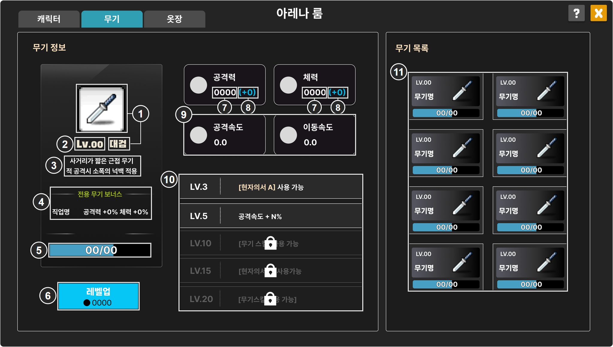
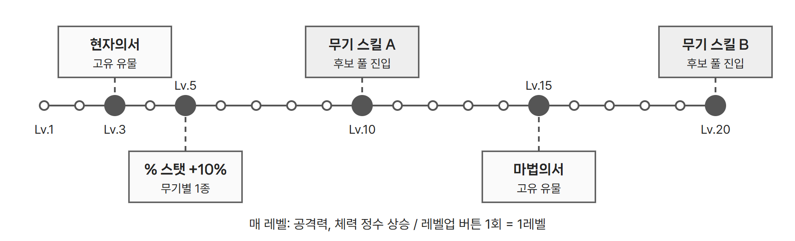

무기 강화와 아레나룸 무기 화면

| IDX | 표시 내용 | 데이터 연결 |
|---|---|---|
| 1 | 무기 아이콘과 무기명 | 무기 기본 정보. 무기명은 WeaponBaseInfo.weapon(WeaponUpgrade.weaponName) |
| 2 | 현재 무기 Lv | 플레이어가 보유한 해당 무기의 레벨 |
| 3 | 무기 설명 | WeaponBaseInfo.WeaponDesc. 줄바꿈을 구분해 표시 |
| 4 | 전용 무기 직업명과 장착 보너스 | 이 무기를 전용 무기로 지정한 직업. 장착 보너스는 공격력 +5%, 체력 +5%로 고정한다. |
| 5 | 카드 게이지 | 해당 무기 카드 보유량 / 다음 레벨 행의 RequireCard |
| 6 | 레벨업 버튼과 소모 메소 | 다음 레벨 행의 RequireMeso와 카드와 메소 충족 여부 |
| 7 | 공격력, 체력 현재값 | 현재 레벨 행의 Damage, Hp |
| 8 | 공격력, 체력 증가량 (+N) | 다음 레벨 행의 DamageGain, HpGain |
| 9 | 공격속도, 이동속도 | WeaponBaseInfo.attackInterval, moveSpeed. 매 레벨 증가 대상 아님 |
| 10 | Lv.3, 5, 10, 15, 20 해금 문구 | WeaponUpgrade.descUi. 유형과 대상은 milestoneType, milestoneKey, milestoneValue |
| 11 | 8종 카드: Lv, 무기명, 카드 게이지 | 무기별 보유 레벨과 카드 보유량 |
- 다음 레벨 행은
id(무기명_레벨)로 찾는다. 증가량과 요구량은 모두 이전 레벨에서 해당 레벨로 오를 때의 값이다. - 캐릭터는 경험치로 자동 레벨업하고 승급 보너스를 계정 전체에 준다. 무기는 카드와 메소로 수동 레벨업하고(최대 20), 정수 스탯을 해당 무기 장착 시에만 준다.
- 매 레벨 공격력과 체력이 오르며, 만렙에서 기본값 대비 +17% 내외가 되도록 설정하였다. 이는 고정 스탯 유물의 1.5배로 설정한 값이다.
● 마일스톤

현자의서와 마법의서는 무기당 2종, 총 16종의 고유 유물이다. 해금은 유물 선택 라운드 시 추첨 풀에 해당 유물이 진입하는 것을 의미하며, 제시된 후보 중 직접 선택해야 획득한다. 강화하지 않은 플레이어는 공용 유물과 공용 스킬만 선택 후보로 받는다.
- Lv.10, 20의 스킬명은
SkillData에서owner가 해당 무기이고reqWeaponLevel이 10, 20인 행의name이다. - 현재 레벨이 마일스톤 레벨보다 낮으면 문구를 흐리게 하고 잠금 아이콘을 얹는다.